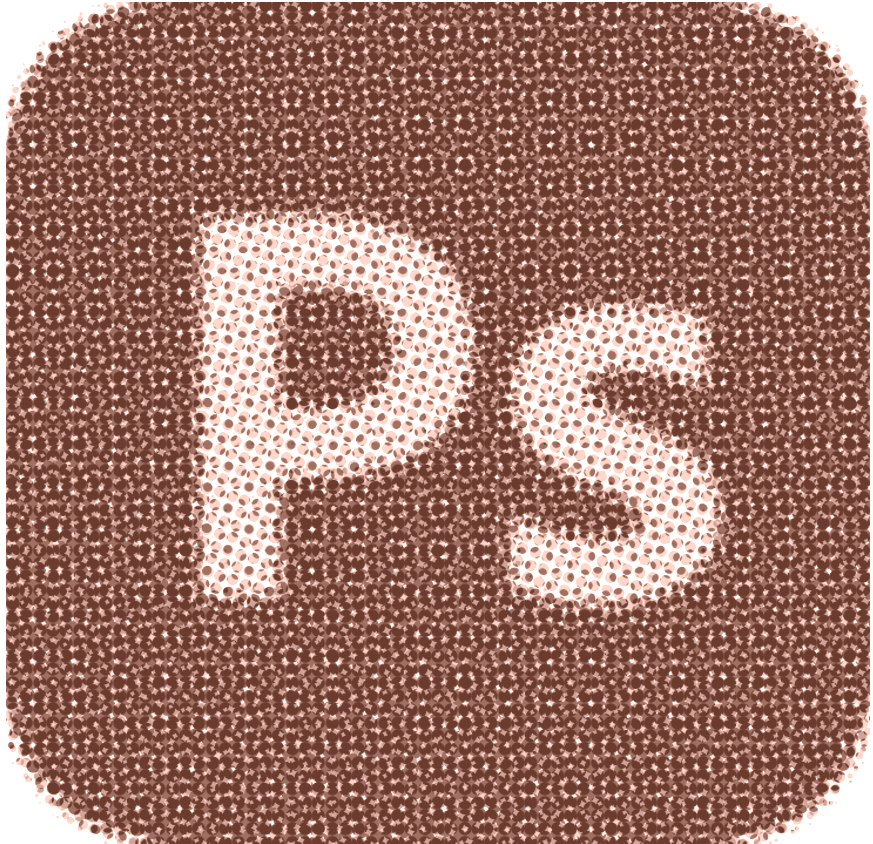
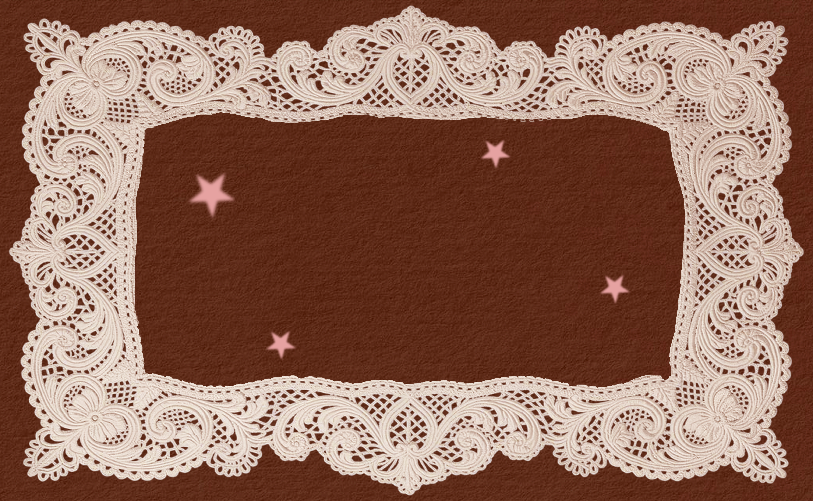
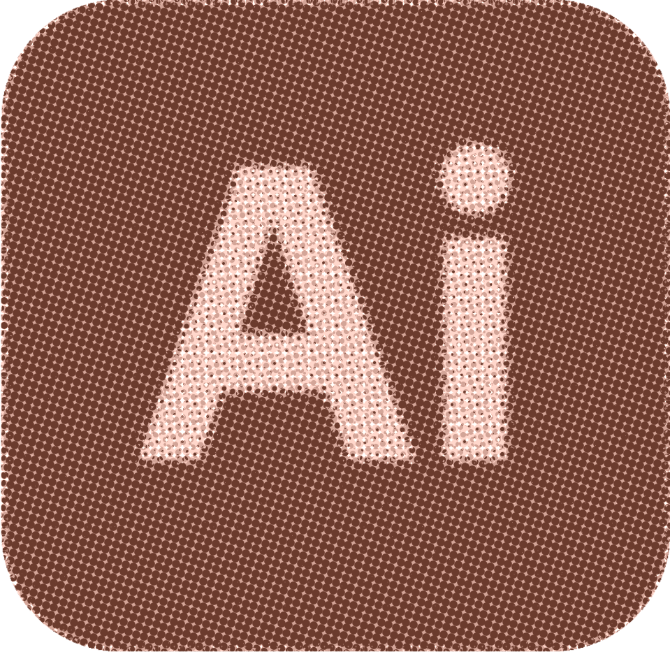
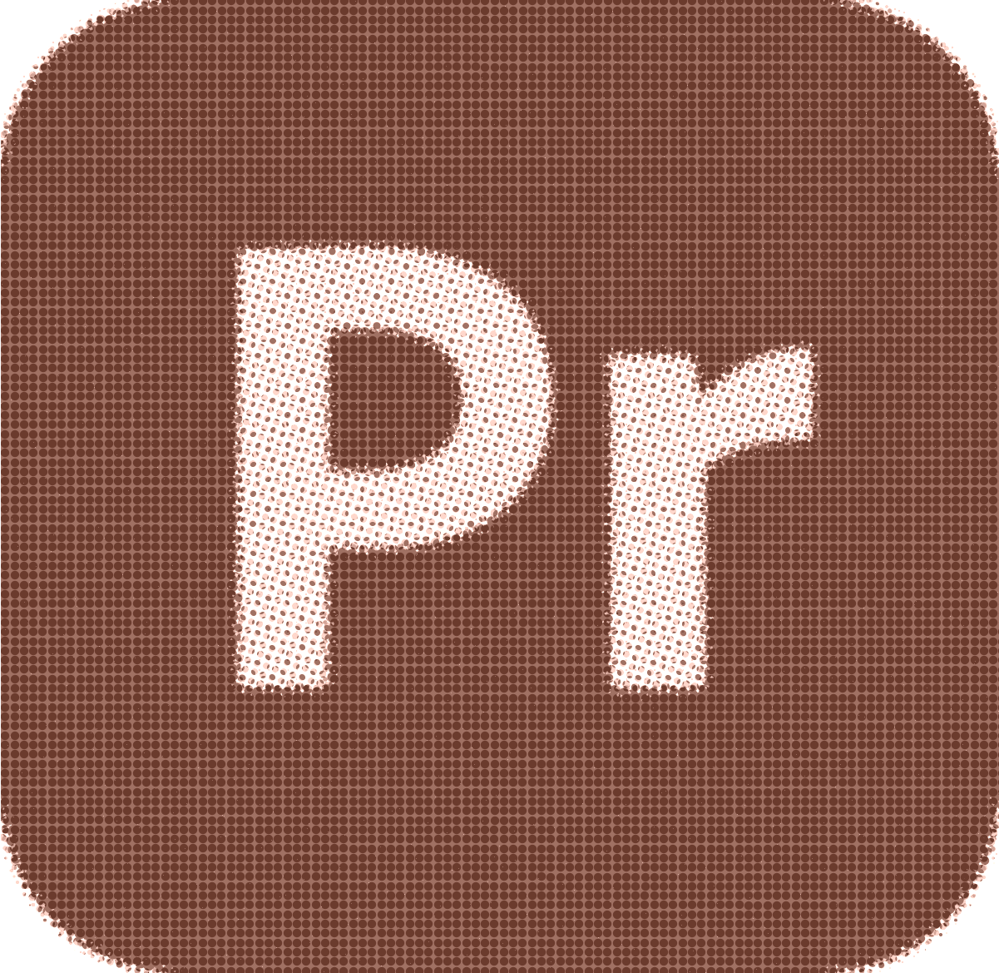
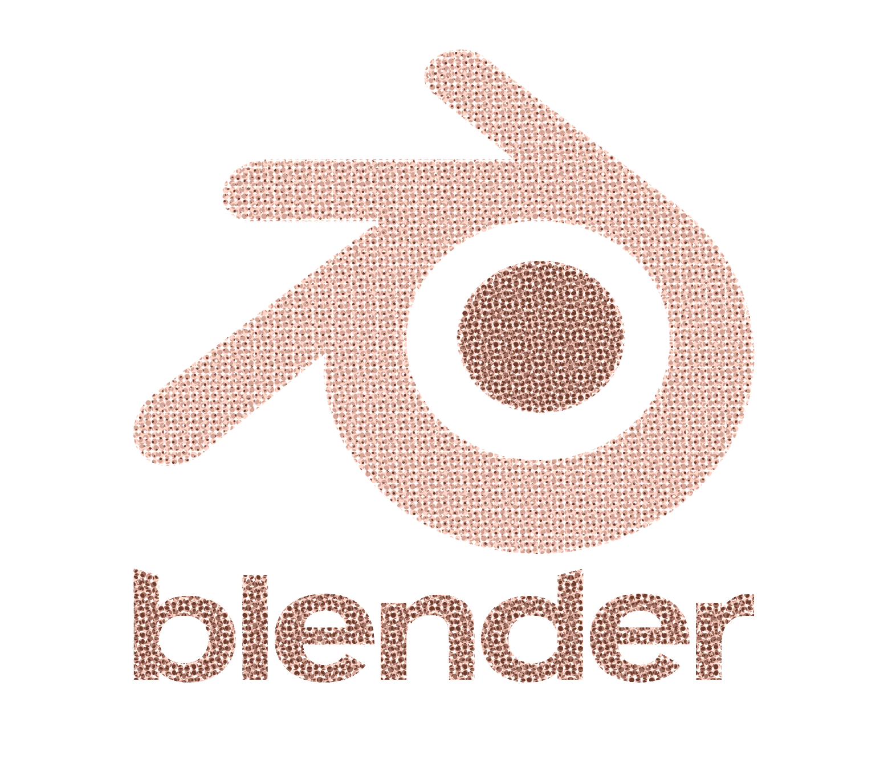
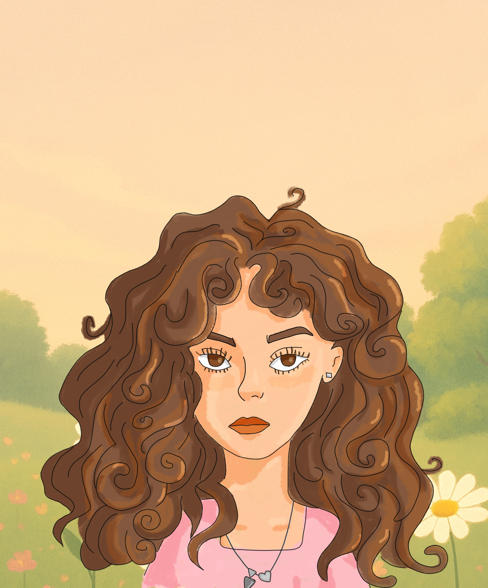

Adobe Photoshop
★★★★☆

Conóceme
Me gusta convertir ideas en experiencias visuales con personalidad.
Diseño con intención. Como estudiante de Diseño Gráfico, disfruto crear marcas y piezas visuales desde el concepto hasta su forma de comunicar.
Exploración constante. El video, el diseño 3D, la web y lo editorial me permiten experimentar con movimiento, composición y narrativa.
Crear desde cero y dar personalidad a cada proyecto.
Explorar, conceptualizar, experimentar y comunicar.
Cochabamba, Bolivia.
Lo que hago

★★★★☆

★★★★★

★★★☆☆
★★☆☆☆

★★★★☆
Ideas que pasaron de mi cabeza a convertirse en algo real. Esta es una selección de algunos de mis proyectos favoritos, donde he podido experimentar con diferentes estilos, técnicas y formas de comunicar.
